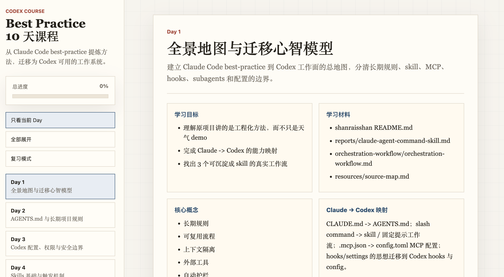

清华大学经管学院金融硕士在读（2025–2027），本科毕业于北京大学经济学院（GPA 3.9/4.0，前 5%），曾赴哈佛大学交换。2025 年获北京市优秀毕业生荣誉。
专注 AI 产品方向，在阿里千问、美团 Keeta、字节豆包均有深度实习经历，覆盖对话产品、跨境售后智能化、大模型评测等核心场景。以第一/共同作者身份参与发表 ICLR 2025 论文。
英语托福 115，擅长小楷书法与街舞，相信真正好用的产品，从来都是情感与逻辑的共同结果。
Skills & Tools
主 Chat 对话产品实习生 · 杭州
售后判责能力产品实习生 · 北京
金融项目负责人 · 北京
策略产品实习生 · 北京
Selected work · 项目实践与学术研究

将 Claude Code best-practice 方法迁移为适合 Codex 的学习路径，覆盖 AGENTS.md、Skills、MCP、Hooks 与 Subagents，并以交互式 GitHub Pages 发布。

为钉钉表格和普通网页提供 Chrome 右侧栏 Markdown 预览，支持单元格自动读取、剪贴板兜底、内容搜索与源文本查看，所有数据均在本地处理。
 Core Contributor
Core Contributor
首个完全开源、面向真实开放域金融搜索与推理的 Agent 基准，包含 635 道题，覆盖时效数据获取、简单历史查询与复杂历史研究三类任务，并由 70 位金融专家参与标注。
 Contributor
Contributor
面向真实专业场景的大模型评测基准，包含 80 个类别、1,346 项专家任务；每项任务主要采用 15–40 个加权检查点，并以专家少样本校准的 ShotJudge 评测，领先模型最高成功率约 66%。
欢迎聊聊 AI 产品、创业想法，或者一起讨论有意思的问题